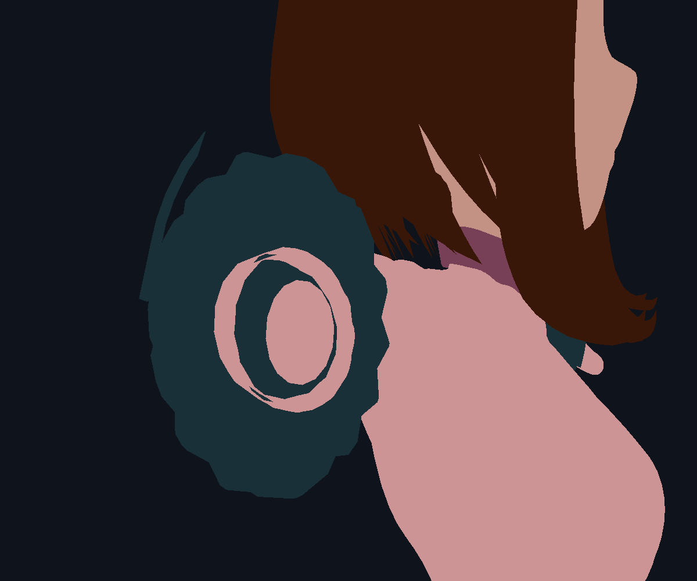
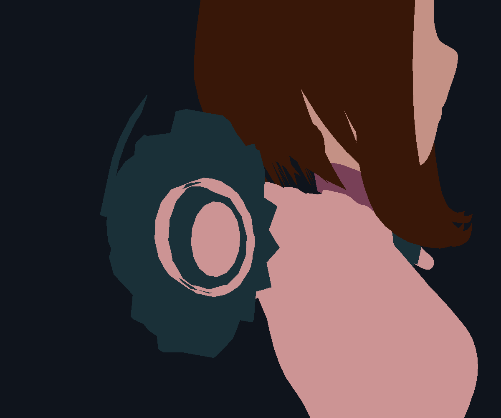

Schema 24 · ordinary hardware clipping installed · outer teeth still open
Removed hidden-endpoint remapping. No pre-deformation boundary reconstruction, edge splitting, Boolean clipping or crossing-face deletion. Exact now leaves the deformed mesh to the renderer’s normal clip stage. Intentional convex-hull outline slivers are untouched.
The saved-view diagnostics below still show teeth. This is evidence of the remaining deformation defect, not visual acceptance. Flat colors omit materials and outlines; they are not exact live before/after captures.


56 geometry, runtime and migration checks pass across Blender 4.2–5.2. Actual Metal triangle-clipping checks pass on 4.2.23 and 5.2.2 with zero differing pixels against the independent test oracle. Windows physical GPU replay remains open.
Live graph updated without saving Uraraka. View, focal lengths, custom curves, topology counts and captured shadow sources retained.
Detailed evidence and limitations